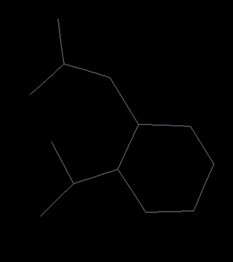
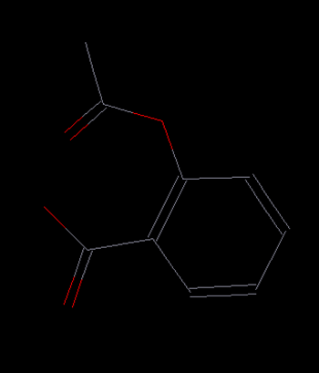

Project and Models
In this lesson, we will show some of the basic operations of DFF:
-
Create and manage a project
-
Create a model from scratch
-
Mouse functions for editing and viewing
Project
In DFF, a project is a folder that contains files and sub-folders of a work. A file named as ".dpf", which saves the data of current project is saved in the folder. You can create a project from scratch or open a existing folder as project.
Open a Project
-
To open a folder as project, start DFF and File/Open Project command. A "Open" dialog lets you browse and select the folder to be opened. If the folder has not been set as project before, an information window will pop up. If you agree, the folder will be set as a project and a new file .dpf will be created and saved.
-
Point to the new project folder, right-click mouse button, a pulldown command list shows several commands can be applied to the project folder. Click Refresh to upload and register DFF project relevant files.
Adjust Font Sizes
- To adjust the font size of the Project Navigator, Point to the project file node in the Project Navigator and right-click the mouse, a pop-up options of “Larger Font” and “Smaller Font”, which can be used to change the font size.
Create an Empty Project
-
Start DFF and click File / New Project command. A dialog named "Create Project" lets you browse a folder on your computer, select a folder and append a new folder name to create a new project folder.
-
To make a subfolder, - Hover over the new project node and right-click, a pulldown menu will pop up. Select New/Folder command, enter a name for the subfolder, and execute the command. A subfolder will be added and listed in the Project Navigator. You can see the project folders and files by using the Open in Explore command in the pulldown menu.
Save Close and Open Project
At any time, you can save the project by using File → Save Project command, you can also save the project into different name by using File → Save Project As command. To close the project, use File → Close Project command. DFF will prompt you to save before close. The saved project can be reloaded by using File → Open Project command. Note: The same model is provided in the Tutorial project. In the following section, we will use the Tutorial project, which has files saved for convenience. The same operations explained can be applied to the project you have just created.
Create a New Model
A model is a molecular system which can be one molecule or a collection of molecules.
In this tutorial, we will show DFF toolkit that can be used to make a new model of aspirin molecule as shown below.

The editing commands are provided in the Toolbar for easy access. We will show how to use the commands in Toolbar to draw a molecule in this tutorial.
-
Add a new model in Project Navigator can be done by right-clicking on the project folder, select New/Model command, and enter a name for the model.
-
Select an element as “C” in the element pulldown
 and then click the Add Atom button () to activate it. Now move your mouse to the main screen, left-click to add an atom. Move the mouse away from the first atom and click again to make another atom. The single bond between them is automatically added.
and then click the Add Atom button () to activate it. Now move your mouse to the main screen, left-click to add an atom. Move the mouse away from the first atom and click again to make another atom. The single bond between them is automatically added. -
Repeat until a six-member ring of carbons is formed. To close the ring, click on the starting atom.
Note: A single click on an existing atom toggles connectivity. A yellow dot indicates connectivity is on. When connectivity is on, any atom added will be bonded to the selected atom. If you make a mistake, use the undo or redo button (
 ) to alter the operations.
) to alter the operations. -
Continue drawing until the entire skeleton (carbon atoms and connectivity) is sketched out. At this stage, don't worry about the hydrogen atoms, elements and bond orders. You should have a structure that looks like this:

- Select "O" in the pull-down element menu of the toolbar. Click the replace-atom button () in the Toolbar. Replace carbon with oxygen as needed by clicking on the atom to be replaced. You should end up with the following structure:

- Select the double-bond button (
 ). Click on a bond to change the bond order as needed. When you are done with this step, the model should look like this:
). Click on a bond to change the bond order as needed. When you are done with this step, the model should look like this:

- Click the add hydrogen button ( ) to add hydrogen atoms automatically. Hydrogen atoms are added to match the available and existing valence numbers for each atom. Make sure the bond orders are correctly set before clicking the add hydrogen button.
-
Clean the structure by clicking the refine structure button ().
-
The coordinates are adjusted from the points clicked on the screen. For convenience in viewing and operation, recenter the molecule by clicking the Edit/Reset COM command. The molecule will be put in the center of the screen. Select the rotate button in the command bar panel (
 ), and then hold the right mouse-button and drag to see how the model can be viewed from different angles. Other commands are translation, zoom in/out and recenter (not changing COM).
), and then hold the right mouse-button and drag to see how the model can be viewed from different angles. Other commands are translation, zoom in/out and recenter (not changing COM). -
Click on the Save button to save the model. DFF uses the “.msd” (Model Structure Data) extension to identify model files.
Mouse and Short-cut Key Operations
This is a good point to practice some mouse and keyboard editing functions.
-
Click the selection (arrow) button in the command bar panel ( ) to activate the mouse selection function. Once it is activated, click on an atom will pick up the atom. You can also press the left button and drag the mouse to select multiple atoms. You can cut, copy, and paste the selected atoms, to the same model but different location (where the mouse point is) and to a different model.
-
The common short-cut keys are supported, the combination keys Ctrl + C, Ctrl +X and Ctrl + V are used for cutting, copy and paste respectively. In addition, Ctrl + V and Ctrl + Y are used for undo and redo, which are the same as the undo and redo buttons in the toolbar.